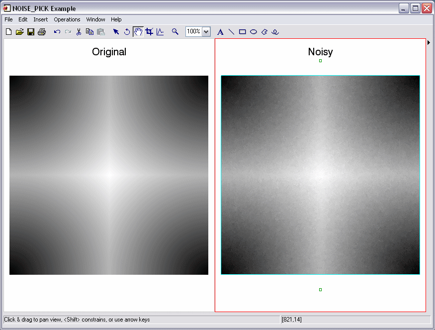

The NOISE_PICK function introduces noise into an image by picking randomly selected pixels to be replaced by a neighboring pixel from a random direction. The probability of replacing a pixel is controlled by a parameter which controls the amount of noise introduced into the image.
Result = NOISE_PICK(Image [, Randomization] [, ITERATIONS=value] [, SEED=value])
Result is an array of the same type and dimensions as Image.
A two dimensional or three dimensional array containing the input image. Two-dimensional arrays are treated as single channel images. For three-dimensional arrays the first dimension contains the color channels forming a pixel (Pixel Interleave).
A floating-point scalar in the range 0.0-1.0 that specifies the probability of picking each pixel for replacement. 0.0 means there is no chance of replacement and 1.0 means that the pixel is always replaced. The default value is 0.5.
Note: This value specifies the probability of replacement for each pixel. It does not necessarily mean that a particular percentage of the pixels are replaced.
Set this keyword to the number of times to apply the noise generator. Increasing the number of iterations increases the distance pixels can move.
Set this keyword to the seed value for the random number generator. This keyword is used in the same way as the SEED argument for RANDOMU.
This example introduces noise to a test image:
; Read an image:
image = BYTSCL(DIST(400))
; Add noise to the image:
image_noisy = NOISE_PICK(image, 0.9, ITER=30)
; Display the images side by side:
IIMAGE, image, VIEW_GRID=[2,1], VIEW_TITLE='Original', $
DIMENSIONS=[850, 550], WINDOW_TITLE='NOISE_PICK Example', $
/NO_SAVEPROMPT
IIMAGE, image_noisy, /VIEW_NEXT, VIEW_TITLE='Noisy'
; Increase the text size
ISETPROPERTY, 'text*', FONT_SIZE=40
The resulting images appear as follows:
|
 |
|
6.4 |
Introduced |